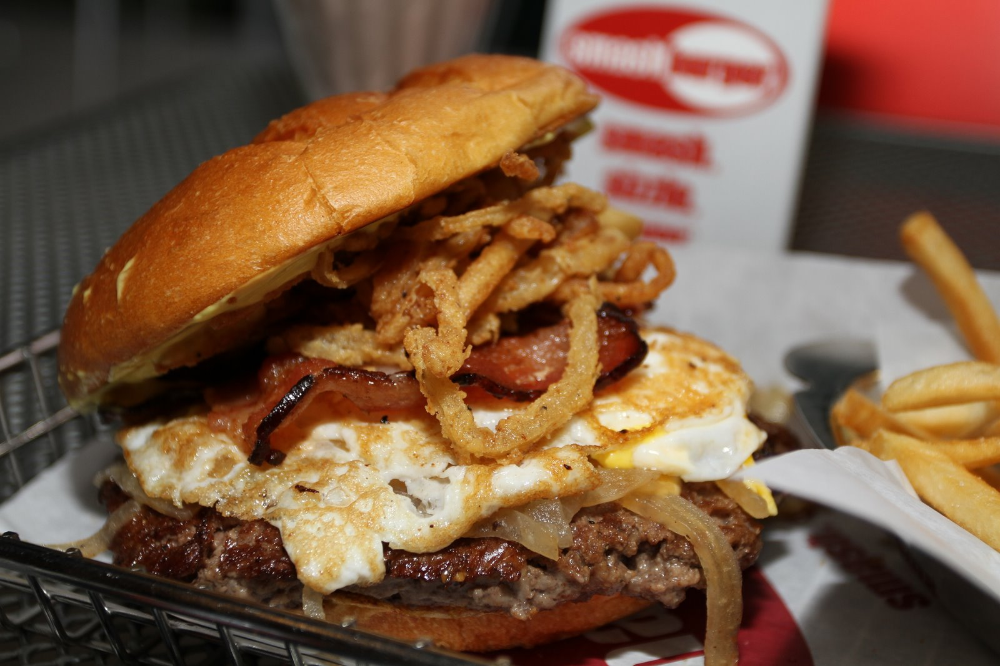

Smashburger Recipe

Beef Smashburger with Toppings
The beef smashburger is as simple and delicious way to enjoy a burger in the old school style.
Adding the onion and fried egg bring out the flavors of the beef and add a unique flavor you don't get with an ordinary burger.
It's simple to make if you follow this recipe! This recipe will use a Blackstone Griddle but a cast iron pan on a grill can also work!
Ingredients
- Ground beef 80/20
- A Yellow onion
- One egg
- Brioche hamburger buns
- American Cheese
- Applewood smoked bacon
- Special Sauce (2 parts mayo to 1 parts mustard and 1 ketchup)
- salt
- pepper
- sweet vermouth
Steps
- First, cut the onion into rings
- Make sure to turn on the Blackstone early so its is hot
- Using your hands, ball up the ground beef, loosely, each ball being about 1/4 of a pound
- Salt and Pepper the beef balls to desired flavor
- Put the onions on the griddle
- When the onions start getting soft pour vermouth on the onions and grill them in the alcohol, carmalizing them
- Remove onions when done, cover to keep warm
- Fry the bacon to desired crispiness
- Toast the brioche buns on the Blackstone
- Once all the prep is done, and the griddle is hot it's time for the burgers
- Lighlty oil the griddle surface
- Place a beef ball on the griddle surface and smash it down into a patty. Uneven edges are expected
- Repeat with all remaining beef balls
- When egdes start to crisp, flip the patties and add the cheese
- Fry the egg to desired hardness
- Remove burgers and egg
- Serve on brioche bun, liberally sauced, with onions on the cheese, all underneath bacon and a fried egg